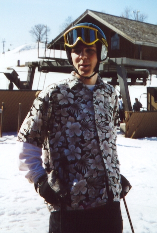

Email: Prins@skistorage.8m.com |
Aol Screen Name: Freeski520 |
Forum Handel: Prins |
|  | Well you've found my page. What do you think. Is it cool? Well this is what I do (Web Page) when I'm not skiing or hanging with my friends. I live in the midwest in Minnesota and ski around the Twin Cities (Home hill is Hyland Hills). I try to get out skiing as much as I can. Next year I'll be 16 so I'll be driving myself places and I hope to be getting around more than I have this year and get to tons of comps and such. When I get to the comps I'm going to get tons of pics and video for the page so it will be even sweeter next year. I can always use your help though. Email me with sugestions. |
I'm on freestyle team Nybora. This was my first year. It's cool but it showed my how much I suck. But it's still cool. This year one the team was pretty much just a year to learn how this stuff works. Next year I'm going to try to go to as many comps that I can. The team meets on Tuesday nights so I'll be at hyland then around 5 or so.
| This is my first year really into freestyle. Before it was that I would just hit jumps and huck myself as far as I could. Totaly old school, but it's all different now. I'm huge into grabing and making sure that I get a huge tweak into it. I'm just starting to spin and grab. I've spun 7's, some 5's, tons of 3's. I'm kind of a wimp when it comes to inverts. I've tried Flaires but never seem to make it all the way around and always land on my head or back. I tried for an hour and didn't make one and I was sore for about a week after wards. |
I really don't know what you guys want to know about me. If there is anything that you guys want answered just fill in the form below and I'll email you the answer and I'll also post it down below.
Your Questions
4/10/00-Do you like cheese?
It depends on what kind of cheese. I really
like fresh cheese. American Cheese is proably the best though.
4/10/00-yo, ur site is cool, can u do a lawn dart or a dinner
roll?
Hey thanks for the props on the site. I've tried
Dinner rolls but haven't landed any yet. Haven't tried Lawn Darts or Fronts
yet.